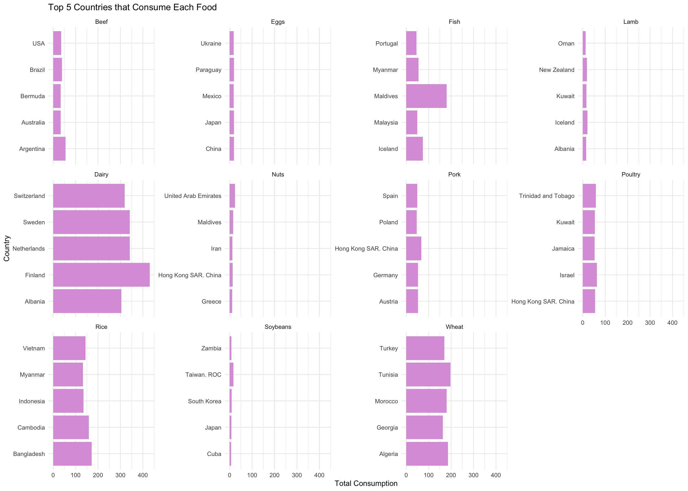
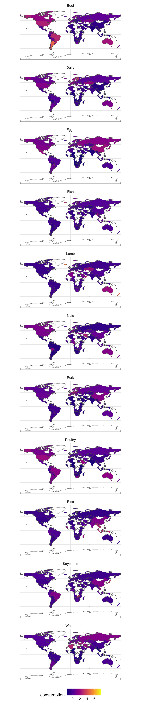

Exam 2
Load Packages
Load Data
Fix Variables
Code
[1] Pork Poultry Beef Lamb Fish Eggs Dairy Wheat
[9] Rice Soybeans Nuts Pork Poultry Beef Lamb Fish
[17] Eggs Dairy Wheat Rice Soybeans Nuts Pork Poultry
[25] Beef Lamb Fish Eggs Dairy Wheat Rice Soybeans
[33] Nuts Pork Poultry Beef Lamb Fish Eggs Dairy
[41] Wheat Rice Soybeans Nuts Pork Poultry Beef Lamb
[49] Fish Eggs Dairy Wheat Rice Soybeans Nuts Pork
[57] Poultry Beef Lamb Fish Eggs Dairy Wheat Rice
[65] Soybeans Nuts Pork Poultry Beef Lamb Fish Eggs
[73] Dairy Wheat Rice Soybeans Nuts Pork Poultry Beef
[81] Lamb Fish Eggs Dairy Wheat Rice Soybeans Nuts
[89] Pork Poultry Beef Lamb Fish Eggs Dairy Wheat
[97] Rice Soybeans Nuts Pork Poultry Beef Lamb Fish
[105] Eggs Dairy Wheat Rice Soybeans Nuts Pork Poultry
[113] Beef Lamb Fish Eggs Dairy Wheat Rice Soybeans
[121] Nuts Pork Poultry Beef Lamb Fish Eggs Dairy
[129] Wheat Rice Soybeans Nuts Pork Poultry Beef Lamb
[137] Fish Eggs Dairy Wheat Rice Soybeans Nuts Pork
[145] Poultry Beef Lamb Fish Eggs Dairy Wheat Rice
[153] Soybeans Nuts Pork Poultry Beef Lamb Fish Eggs
[161] Dairy Wheat Rice Soybeans Nuts Pork Poultry Beef
[169] Lamb Fish Eggs Dairy Wheat Rice Soybeans Nuts
[177] Pork Poultry Beef Lamb Fish Eggs Dairy Wheat
[185] Rice Soybeans Nuts Pork Poultry Beef Lamb Fish
[193] Eggs Dairy Wheat Rice Soybeans Nuts Pork Poultry
[201] Beef Lamb Fish Eggs Dairy Wheat Rice Soybeans
[209] Nuts Pork Poultry Beef Lamb Fish Eggs Dairy
[217] Wheat Rice Soybeans Nuts Pork Poultry Beef Lamb
[225] Fish Eggs Dairy Wheat Rice Soybeans Nuts Pork
[233] Poultry Beef Lamb Fish Eggs Dairy Wheat Rice
[241] Soybeans Nuts Pork Poultry Beef Lamb Fish Eggs
[249] Dairy Wheat Rice Soybeans Nuts Pork Poultry Beef
[257] Lamb Fish Eggs Dairy Wheat Rice Soybeans Nuts
[265] Pork Poultry Beef Lamb Fish Eggs Dairy Wheat
[273] Rice Soybeans Nuts Pork Poultry Beef Lamb Fish
[281] Eggs Dairy Wheat Rice Soybeans Nuts Pork Poultry
[289] Beef Lamb Fish Eggs Dairy Wheat Rice Soybeans
[297] Nuts Pork Poultry Beef Lamb Fish Eggs Dairy
[305] Wheat Rice Soybeans Nuts Pork Poultry Beef Lamb
[313] Fish Eggs Dairy Wheat Rice Soybeans Nuts Pork
[321] Poultry Beef Lamb Fish Eggs Dairy Wheat Rice
[329] Soybeans Nuts Pork Poultry Beef Lamb Fish Eggs
[337] Dairy Wheat Rice Soybeans Nuts Pork Poultry Beef
[345] Lamb Fish Eggs Dairy Wheat Rice Soybeans Nuts
[353] Pork Poultry Beef Lamb Fish Eggs Dairy Wheat
[361] Rice Soybeans Nuts Pork Poultry Beef Lamb Fish
[369] Eggs Dairy Wheat Rice Soybeans Nuts Pork Poultry
[377] Beef Lamb Fish Eggs Dairy Wheat Rice Soybeans
[385] Nuts Pork Poultry Beef Lamb Fish Eggs Dairy
[393] Wheat Rice Soybeans Nuts Pork Poultry Beef Lamb
[401] Fish Eggs Dairy Wheat Rice Soybeans Nuts Pork
[409] Poultry Beef Lamb Fish Eggs Dairy Wheat Rice
[417] Soybeans Nuts Pork Poultry Beef Lamb Fish Eggs
[425] Dairy Wheat Rice Soybeans Nuts Pork Poultry Beef
[433] Lamb Fish Eggs Dairy Wheat Rice Soybeans Nuts
[441] Pork Poultry Beef Lamb Fish Eggs Dairy Wheat
[449] Rice Soybeans Nuts Pork Poultry Beef Lamb Fish
[457] Eggs Dairy Wheat Rice Soybeans Nuts Pork Poultry
[465] Beef Lamb Fish Eggs Dairy Wheat Rice Soybeans
[473] Nuts Pork Poultry Beef Lamb Fish Eggs Dairy
[481] Wheat Rice Soybeans Nuts Pork Poultry Beef Lamb
[489] Fish Eggs Dairy Wheat Rice Soybeans Nuts Pork
[497] Poultry Beef Lamb Fish Eggs Dairy Wheat Rice
[505] Soybeans Nuts Pork Poultry Beef Lamb Fish Eggs
[513] Dairy Wheat Rice Soybeans Nuts Pork Poultry Beef
[521] Lamb Fish Eggs Dairy Wheat Rice Soybeans Nuts
[529] Pork Poultry Beef Lamb Fish Eggs Dairy Wheat
[537] Rice Soybeans Nuts Pork Poultry Beef Lamb Fish
[545] Eggs Dairy Wheat Rice Soybeans Nuts Pork Poultry
[553] Beef Lamb Fish Eggs Dairy Wheat Rice Soybeans
[561] Nuts Pork Poultry Beef Lamb Fish Eggs Dairy
[569] Wheat Rice Soybeans Nuts Pork Poultry Beef Lamb
[577] Fish Eggs Dairy Wheat Rice Soybeans Nuts Pork
[585] Poultry Beef Lamb Fish Eggs Dairy Wheat Rice
[593] Soybeans Nuts Pork Poultry Beef Lamb Fish Eggs
[601] Dairy Wheat Rice Soybeans Nuts Pork Poultry Beef
[609] Lamb Fish Eggs Dairy Wheat Rice Soybeans Nuts
[617] Pork Poultry Beef Lamb Fish Eggs Dairy Wheat
[625] Rice Soybeans Nuts Pork Poultry Beef Lamb Fish
[633] Eggs Dairy Wheat Rice Soybeans Nuts Pork Poultry
[641] Beef Lamb Fish Eggs Dairy Wheat Rice Soybeans
[649] Nuts Pork Poultry Beef Lamb Fish Eggs Dairy
[657] Wheat Rice Soybeans Nuts Pork Poultry Beef Lamb
[665] Fish Eggs Dairy Wheat Rice Soybeans Nuts Pork
[673] Poultry Beef Lamb Fish Eggs Dairy Wheat Rice
[681] Soybeans Nuts Pork Poultry Beef Lamb Fish Eggs
[689] Dairy Wheat Rice Soybeans Nuts Pork Poultry Beef
[697] Lamb Fish Eggs Dairy Wheat Rice Soybeans Nuts
[705] Pork Poultry Beef Lamb Fish Eggs Dairy Wheat
[713] Rice Soybeans Nuts Pork Poultry Beef Lamb Fish
[721] Eggs Dairy Wheat Rice Soybeans Nuts Pork Poultry
[729] Beef Lamb Fish Eggs Dairy Wheat Rice Soybeans
[737] Nuts Pork Poultry Beef Lamb Fish Eggs Dairy
[745] Wheat Rice Soybeans Nuts Pork Poultry Beef Lamb
[753] Fish Eggs Dairy Wheat Rice Soybeans Nuts Pork
[761] Poultry Beef Lamb Fish Eggs Dairy Wheat Rice
[769] Soybeans Nuts Pork Poultry Beef Lamb Fish Eggs
[777] Dairy Wheat Rice Soybeans Nuts Pork Poultry Beef
[785] Lamb Fish Eggs Dairy Wheat Rice Soybeans Nuts
[793] Pork Poultry Beef Lamb Fish Eggs Dairy Wheat
[801] Rice Soybeans Nuts Pork Poultry Beef Lamb Fish
[809] Eggs Dairy Wheat Rice Soybeans Nuts Pork Poultry
[817] Beef Lamb Fish Eggs Dairy Wheat Rice Soybeans
[825] Nuts Pork Poultry Beef Lamb Fish Eggs Dairy
[833] Wheat Rice Soybeans Nuts Pork Poultry Beef Lamb
[841] Fish Eggs Dairy Wheat Rice Soybeans Nuts Pork
[849] Poultry Beef Lamb Fish Eggs Dairy Wheat Rice
[857] Soybeans Nuts Pork Poultry Beef Lamb Fish Eggs
[865] Dairy Wheat Rice Soybeans Nuts Pork Poultry Beef
[873] Lamb Fish Eggs Dairy Wheat Rice Soybeans Nuts
[881] Pork Poultry Beef Lamb Fish Eggs Dairy Wheat
[889] Rice Soybeans Nuts Pork Poultry Beef Lamb Fish
[897] Eggs Dairy Wheat Rice Soybeans Nuts Pork Poultry
[905] Beef Lamb Fish Eggs Dairy Wheat Rice Soybeans
[913] Nuts Pork Poultry Beef Lamb Fish Eggs Dairy
[921] Wheat Rice Soybeans Nuts Pork Poultry Beef Lamb
[929] Fish Eggs Dairy Wheat Rice Soybeans Nuts Pork
[937] Poultry Beef Lamb Fish Eggs Dairy Wheat Rice
[945] Soybeans Nuts Pork Poultry Beef Lamb Fish Eggs
[953] Dairy Wheat Rice Soybeans Nuts Pork Poultry Beef
[961] Lamb Fish Eggs Dairy Wheat Rice Soybeans Nuts
[969] Pork Poultry Beef Lamb Fish Eggs Dairy Wheat
[977] Rice Soybeans Nuts Pork Poultry Beef Lamb Fish
[985] Eggs Dairy Wheat Rice Soybeans Nuts Pork Poultry
[993] Beef Lamb Fish Eggs Dairy Wheat Rice Soybeans
[1001] Nuts Pork Poultry Beef Lamb Fish Eggs Dairy
[1009] Wheat Rice Soybeans Nuts Pork Poultry Beef Lamb
[1017] Fish Eggs Dairy Wheat Rice Soybeans Nuts Pork
[1025] Poultry Beef Lamb Fish Eggs Dairy Wheat Rice
[1033] Soybeans Nuts Pork Poultry Beef Lamb Fish Eggs
[1041] Dairy Wheat Rice Soybeans Nuts Pork Poultry Beef
[1049] Lamb Fish Eggs Dairy Wheat Rice Soybeans Nuts
[1057] Pork Poultry Beef Lamb Fish Eggs Dairy Wheat
[1065] Rice Soybeans Nuts Pork Poultry Beef Lamb Fish
[1073] Eggs Dairy Wheat Rice Soybeans Nuts Pork Poultry
[1081] Beef Lamb Fish Eggs Dairy Wheat Rice Soybeans
[1089] Nuts Pork Poultry Beef Lamb Fish Eggs Dairy
[1097] Wheat Rice Soybeans Nuts Pork Poultry Beef Lamb
[1105] Fish Eggs Dairy Wheat Rice Soybeans Nuts Pork
[1113] Poultry Beef Lamb Fish Eggs Dairy Wheat Rice
[1121] Soybeans Nuts Pork Poultry Beef Lamb Fish Eggs
[1129] Dairy Wheat Rice Soybeans Nuts Pork Poultry Beef
[1137] Lamb Fish Eggs Dairy Wheat Rice Soybeans Nuts
[1145] Pork Poultry Beef Lamb Fish Eggs Dairy Wheat
[1153] Rice Soybeans Nuts Pork Poultry Beef Lamb Fish
[1161] Eggs Dairy Wheat Rice Soybeans Nuts Pork Poultry
[1169] Beef Lamb Fish Eggs Dairy Wheat Rice Soybeans
[1177] Nuts Pork Poultry Beef Lamb Fish Eggs Dairy
[1185] Wheat Rice Soybeans Nuts Pork Poultry Beef Lamb
[1193] Fish Eggs Dairy Wheat Rice Soybeans Nuts Pork
[1201] Poultry Beef Lamb Fish Eggs Dairy Wheat Rice
[1209] Soybeans Nuts Pork Poultry Beef Lamb Fish Eggs
[1217] Dairy Wheat Rice Soybeans Nuts Pork Poultry Beef
[1225] Lamb Fish Eggs Dairy Wheat Rice Soybeans Nuts
[1233] Pork Poultry Beef Lamb Fish Eggs Dairy Wheat
[1241] Rice Soybeans Nuts Pork Poultry Beef Lamb Fish
[1249] Eggs Dairy Wheat Rice Soybeans Nuts Pork Poultry
[1257] Beef Lamb Fish Eggs Dairy Wheat Rice Soybeans
[1265] Nuts Pork Poultry Beef Lamb Fish Eggs Dairy
[1273] Wheat Rice Soybeans Nuts Pork Poultry Beef Lamb
[1281] Fish Eggs Dairy Wheat Rice Soybeans Nuts Pork
[1289] Poultry Beef Lamb Fish Eggs Dairy Wheat Rice
[1297] Soybeans Nuts Pork Poultry Beef Lamb Fish Eggs
[1305] Dairy Wheat Rice Soybeans Nuts Pork Poultry Beef
[1313] Lamb Fish Eggs Dairy Wheat Rice Soybeans Nuts
[1321] Pork Poultry Beef Lamb Fish Eggs Dairy Wheat
[1329] Rice Soybeans Nuts Pork Poultry Beef Lamb Fish
[1337] Eggs Dairy Wheat Rice Soybeans Nuts Pork Poultry
[1345] Beef Lamb Fish Eggs Dairy Wheat Rice Soybeans
[1353] Nuts Pork Poultry Beef Lamb Fish Eggs Dairy
[1361] Wheat Rice Soybeans Nuts Pork Poultry Beef Lamb
[1369] Fish Eggs Dairy Wheat Rice Soybeans Nuts Pork
[1377] Poultry Beef Lamb Fish Eggs Dairy Wheat Rice
[1385] Soybeans Nuts Pork Poultry Beef Lamb Fish Eggs
[1393] Dairy Wheat Rice Soybeans Nuts Pork Poultry Beef
[1401] Lamb Fish Eggs Dairy Wheat Rice Soybeans Nuts
[1409] Pork Poultry Beef Lamb Fish Eggs Dairy Wheat
[1417] Rice Soybeans Nuts Pork Poultry Beef Lamb Fish
[1425] Eggs Dairy Wheat Rice Soybeans Nuts
Levels: Beef Eggs Fish Lamb Dairy Nuts Pork Poultry Rice Soybeans WheatResearch Question 1: Which 5 countries consume the most food?
Code
# A tibble: 5 × 2
country consumption
<chr> <dbl>
1 Finland 640.
2 Lithuania 555.
3 Sweden 550
4 Netherlands 534.
5 Albania 533.Research Question 2: Which top 5 countries consume each type of food?
Code
# A tibble: 55 × 3
# Groups: food_category [11]
food_category country consumption
<fct> <chr> <dbl>
1 Beef Argentina 55.5
2 Beef Brazil 39.2
3 Beef USA 36.2
4 Beef Australia 33.9
5 Beef Bermuda 33.2
6 Eggs Japan 19.2
7 Eggs Paraguay 18.8
8 Eggs China 18.8
9 Eggs Mexico 18.3
10 Eggs Ukraine 18.0
# ℹ 45 more rowsCode

Research Question 3: What does the consumption of each food look like?
Code
ne_countries(returnclass = "sf") |>
select(name, geometry) |>
mutate(name = ifelse(name == "United States of America", "USA", name)) |>
mutate(name = ifelse(name == "Bosnia and Herz.", "Bosnia and Herzegovina", name)) |>
mutate(name = ifelse(name == "Czechia", "Czech Republic", name)) |>
mutate(name = ifelse(name == "Taiwan", "Taiwan. ROC", name)) |>
left_join(
fcc |>
select(-co2_emmission) |>
group_by(food_category) |>
mutate(consumption = (consumption - mean(consumption))/sd(consumption)), join_by(name == country)) |>
pivot_wider(names_from = food_category, values_from = consumption) |>
select(-"NA") |>
pivot_longer(cols = c(-name, -geometry),
names_to = "food_category",
values_to = "consumption") |>
ggplot() +
geom_sf(aes(fill = consumption)) +
facet_wrap(~food_category, ncol = 1) +
scale_fill_viridis_c(option = "plasma", na.value = "white") +
theme_minimal() +
theme(legend.position = "bottom")